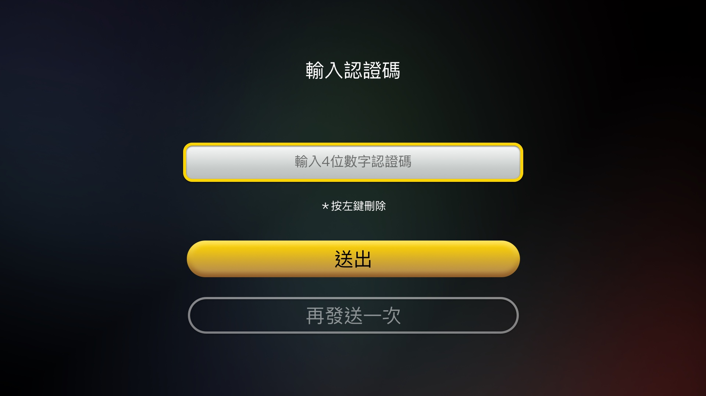
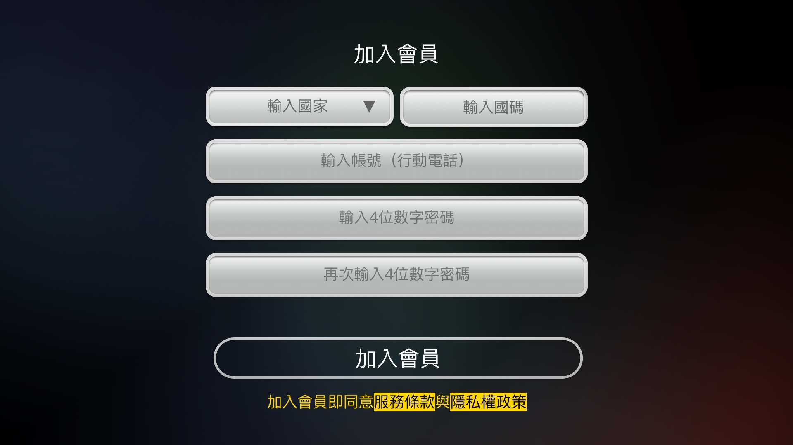

01 / 08
Case · Cross-device UX
FainTV
跨 TV · Mobile · Web 的訂閱體驗設計

System
同一產品 · 三端設計
同一套帳號與任務模型，在 TV、Mobile、Web 用各自正確的方式表達
TV
= 看／驗證

焦點 · 電話驗證｜操作者：觀看者
Mobile
= 訂

掃卡訂閱 · 完成後電視同步｜操作者：常為子女
Web
= 管
消費紀錄 · 權益｜操作者：本人或家人
Mobile · Deep dive
Mobile — 訂閱主場 · 跨裝置閉環


掃卡 · 原生鍵盤
完成頁：電視已同步啟用